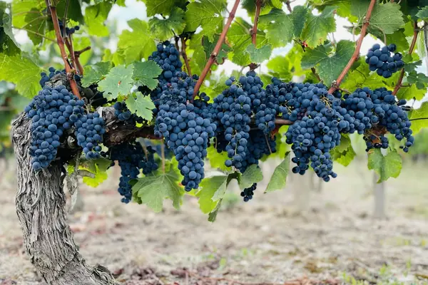

Home › Wine regions › Bordeaux
Bordeaux wine region

Photo: John Cameron on Unsplash
Structured reds and sweet Sauternes.
The benchmark for many wine styles, organized by appellation (AOC).
Notable producers in Bordeaux
- Château Lafite Rothschild
- Château Latour
- Château Margaux
- Château Haut-Brion
- Château Pétrus
Official appellations
| Appellation | Status | Style | Grapes |
|---|---|---|---|
| Pauillac (1936) Médoc commune on the Left Bank of the Gironde, home to three 1855 First Growths: Lafite Rothschild, Latour and Mouton Rothschild. Deep gravel soils suit long-lived, Cabernet Sauvignon-led blends. | AOC | Red | Cabernet Sauvignon, Merlot, Cabernet Franc, Petit Verdot |
| Sauternes (1936) Sweet wines from five communes (Sauternes, Barsac, Bommes, Fargues and Preignac) where autumn mists from the Ciron and Garonne rivers encourage noble rot. Barsac may also use its own appellation name. | AOC | White, Sweet | Sémillon, Sauvignon Blanc, Muscadelle |
Bordeaux wines to try
Château Margaux Château Margaux
Bordeaux · Margaux · Cabernet Sauvignon, Merlot
Perfumed and silky: cassis, violets, cedar and fine tannins that age for decades.
Food: Roast lamb, beef Wellington
Château Lynch-Bages Château Lynch-Bages
Bordeaux · Pauillac · Cabernet Sauvignon, Merlot
Rich Pauillac: blackcurrant, mint, graphite and toasty oak.
Food: Ribeye steak, roast lamb
Château d'Yquem Château d'Yquem
Bordeaux · Sauternes · Sémillon, Sauvignon Blanc
Golden and luscious: apricot, honey, saffron and bright acidity from noble rot.
Food: Foie gras, Roquefort, fruit tarts
Baron Philippe de Rothschild Mouton Cadet Rouge
Bordeaux · Merlot, Cabernet Sauvignon, Cabernet Franc
Easy everyday claret: red berries, plum and soft tannins.
Food: Roast chicken, burgers, pâté
Château Suduiraut Lions Secs de Suduiraut
Bordeaux · Bordeaux Blanc · Sémillon, Sauvignon Blanc
Dry white from a Sauternes estate: citrus, beeswax and fresh texture.
Food: Fish, salads
Château Lynch-Bages Blanc de Lynch-Bages
Bordeaux · Bordeaux Blanc · Sauvignon Blanc, Sémillon, Muscadelle
Rare white from Pauillac: citrus, exotic fruit and toasty oak.
Food: Turbot, chicken
Château Siran Saint-Jacques de Siran
Bordeaux · Bordeaux Supérieur · Merlot, Cabernet Sauvignon
Château Siran's approachable red: plum and soft tannins.
Food: Burgers, charcuterie
Château Beaumont Haut-Médoc
Bordeaux · Haut-Médoc · Cabernet Sauvignon, Merlot
Classic Haut-Médoc: blackcurrant, cedar and medium body.
Food: Lamb, steak
Château Cos d'Estournel G d'Estournel
Bordeaux · Médoc · Merlot, Cabernet Sauvignon
Médoc red from the Cos d'Estournel team: ripe and supple.
Food: Steak, duck
Château Siran Margaux
Bordeaux · Margaux · Cabernet Sauvignon, Merlot, Petit Verdot
Fragrant Margaux: violets, cassis and fine tannins.
Food: Lamb, beef
Château Lafite Rothschild Carruades de Lafite
Bordeaux · Pauillac · Cabernet Sauvignon, Merlot
Lafite's second wine: cedar, cassis and elegance.
Food: Rack of lamb
Château de Pez 2nd de Pez
Bordeaux · Saint-Estèphe · Cabernet Sauvignon, Merlot
Second wine of de Pez: firm, fresh Saint-Estèphe.
Food: Steak, lamb
Château Montrose La Dame de Montrose
Bordeaux · Saint-Estèphe · Cabernet Sauvignon, Merlot
Montrose's second wine: dense blackcurrant and graphite.
Food: Beef, lamb
Château Smith Haut Lafitte Les Hauts de Smith
Bordeaux · Pessac-Léognan · Cabernet Sauvignon, Merlot
Second wine of Smith Haut Lafitte: smoky, ripe and polished.
Food: Duck, lamb
Château La Mission Haut-Brion Grand Vin
Bordeaux · Pessac-Léognan · Cabernet Sauvignon, Merlot
Great Graves red: smoke, tobacco, dark fruit and power.
Food: Beef Wellington, game
Château Tour Saint Christophe Saint-Émilion Grand Cru
Bordeaux · Saint-Émilion · Merlot, Cabernet Franc
Limestone-terrace Saint-Émilion: fresh, ripe and modern.
Food: Duck, lamb
Château Beauséjour Bécot Saint-Émilion 1er Grand Cru Classé
Bordeaux · Saint-Émilion · Merlot, Cabernet Franc
Plateau limestone Saint-Émilion: plush fruit and freshness.
Food: Lamb, beef
Château Troplong Mondot Mondot
Bordeaux · Saint-Émilion · Merlot, Cabernet Sauvignon
Second wine of Troplong Mondot: fresh red and dark fruit.
Food: Roast chicken, lamb
Château Troplong Mondot Saint-Émilion 1er Grand Cru Classé
Bordeaux · Saint-Émilion · Merlot, Cabernet Franc, Cabernet Sauvignon
From Saint-Émilion's highest point: dark fruit, freshness and structure.
Food: Beef, game
Château Beauséjour (Duffau-Lagarrosse) Saint-Émilion 1er Grand Cru Classé
Bordeaux · Saint-Émilion · Merlot, Cabernet Franc
Limestone-plateau Saint-Émilion: elegant, mineral and long.
Food: Lamb, veal
Château Cheval Blanc Grand Vin
Bordeaux · Saint-Émilion · Cabernet Franc, Merlot
Iconic Saint-Émilion with high Cabernet Franc: silky, fragrant and timeless.
Food: Roast lamb, truffle
Château L'Évangile Pomerol
Bordeaux · Pomerol · Merlot, Cabernet Franc
Opulent Pomerol: plum, truffle and velvety tannins.
Food: Beef, mushrooms
Château La Conseillante Pomerol
Bordeaux · Pomerol · Merlot, Cabernet Franc
Silky, perfumed Pomerol with violets and red fruit.
Food: Lamb, duck
Château Lafleur Pomerol
Bordeaux · Pomerol · Merlot, Cabernet Franc
Tiny, revered Pomerol estate: intense, complex and very long-lived.
Food: Game, beef
Château Siaurac Lalande-de-Pomerol
Bordeaux · Lalande-de-Pomerol · Merlot, Cabernet Franc
Supple, plummy neighbour of Pomerol.
Food: Duck, lamb
Château Mouton Rothschild Grand Vin
Bordeaux · Pauillac · Cabernet Sauvignon, Merlot
Pauillac first growth with artist labels: opulent cassis and spice.
Food: Rack of lamb
Château Latour Grand Vin
Bordeaux · Pauillac · Cabernet Sauvignon, Merlot
Powerful, long-lived Pauillac first growth.
Food: Beef, lamb
Château Haut-Brion Grand Vin
Bordeaux · Pessac-Léognan · Merlot, Cabernet Sauvignon, Cabernet Franc
The Graves first growth: smoky, earthy and refined.
Food: Game, beef
Château Pichon Longueville Comtesse de Lalande Grand Vin
Bordeaux · Pauillac · Cabernet Sauvignon, Merlot
Seductive, Merlot-rich Pauillac: silky and perfumed.
Food: Lamb, duck
Château Pichon Baron Grand Vin
Bordeaux · Pauillac · Cabernet Sauvignon, Merlot
Powerful Pauillac: blackcurrant, cedar and firm tannins.
Food: Steak, lamb
Château Cos d'Estournel Grand Vin
Bordeaux · Saint-Estèphe · Cabernet Sauvignon, Merlot
Exotic, spicy Saint-Estèphe second growth.
Food: Beef, lamb
Château Léoville Las Cases Grand Vin
Bordeaux · Saint-Julien · Cabernet Sauvignon, Merlot, Cabernet Franc
Classic, structured Saint-Julien built for long ageing.
Food: Lamb, beef
Château Lagrange Saint-Julien
Bordeaux · Saint-Julien · Cabernet Sauvignon, Merlot
Saint-Julien third growth: balanced and fresh.
Food: Lamb, steak
Château Cantenac Brown Margaux
Bordeaux · Margaux · Cabernet Sauvignon, Merlot
Margaux third growth: firm, floral and dark-fruited.
Food: Lamb, beef
Château Palmer Margaux
Bordeaux · Margaux · Merlot, Cabernet Sauvignon, Petit Verdot
Iconic Margaux: silky, perfumed and complex.
Food: Lamb, duck
Château Talbot Saint-Julien
Bordeaux · Saint-Julien · Cabernet Sauvignon, Merlot
Generous Saint-Julien fourth growth: cassis and cedar.
Food: Lamb, beef
Château Batailley Pauillac
Bordeaux · Pauillac · Cabernet Sauvignon, Merlot
Traditional Pauillac fifth growth: firm and classic.
Food: Steak, lamb
Spirits from Bordeaux
More wine regions in France
The Wine Reference newsletter
New wines, stories and career guides, one email a week at most.
Over 18s only. Unsubscribe any time with one click. Your email is stored securely by Kit and never shared.
Support The Wine Reference
This guide is free, with no paywall. If it helped you choose a bottle, you can buy me a glass and keep it growing.
🍷 Buy me a glass